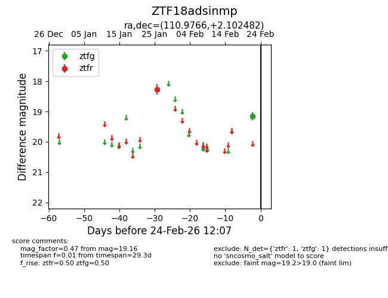
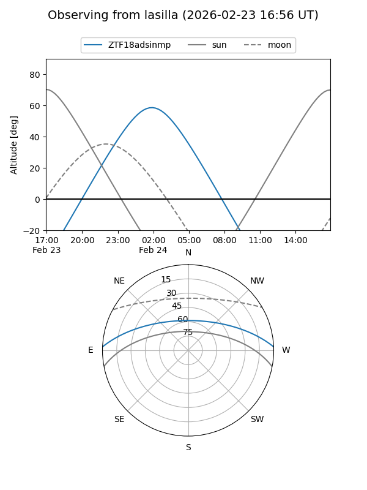
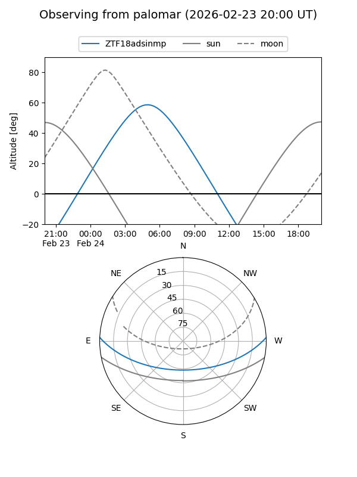

ZTF18adsinmp
Target ZTF18adsinmp at 2026-02-24 12:08
Aliases and brokers:
FINK: link
Lasair: link
ALeRCE: link
alt names
ZTF18adsinmp (ztf,fink_ztf)
Coordinates:
equatorial (ra, dec) = 110.9766,+2.10248
equatorial (HMS+DMS) = 07:23:54.39,+02:06:08.93
galactic (l, b) = (214.7666,+8.18143)
Flags:
Photometry:
last ztfg=19.16, ztfr=18.27
1 ztfg, 1 ztfr detections
Lightcurve

Visibility


Additional plots